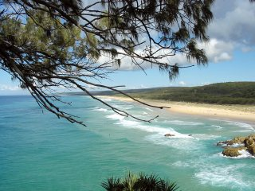

29 Augustus
 Een verre nicht bezocht in Berridale, een klein dorpje aan de rand van de Australische Alpen vandaag. Na vroeg opstaan een twee uur door de mist rijden was ik er precies optijd. Ze heeft me een van de ski resorts laten zien, waar het erg druk was. Het contrast met het warme weer in Canberra is enorm. Op de terugweg werd het weer behoorlijk slecht. Het regende voor het eerst in tijden weer echt in Canberra...
Een verre nicht bezocht in Berridale, een klein dorpje aan de rand van de Australische Alpen vandaag. Na vroeg opstaan een twee uur door de mist rijden was ik er precies optijd. Ze heeft me een van de ski resorts laten zien, waar het erg druk was. Het contrast met het warme weer in Canberra is enorm. Op de terugweg werd het weer behoorlijk slecht. Het regende voor het eerst in tijden weer echt in Canberra...
28 Augustus
 20 Graden vandaag in Canberra. Heerlijk als alles weer een beetje tot leven komt. Hier zijn wat bloemen in een van de parken te zien. Binnenkort hebben ze hier een groot bloemenfestival.
20 Graden vandaag in Canberra. Heerlijk als alles weer een beetje tot leven komt. Hier zijn wat bloemen in een van de parken te zien. Binnenkort hebben ze hier een groot bloemenfestival.
22 Augustus
 Een fietstocht in de omgeving van de stad. Aan de andere kant van het meer was ik nog niet geweest, en het bleek er mooi te zijn. De besneewde bergtoppen op de achtergrond, een boel struiken die in bloei staan en een temperatuur van 18 graden hebben weer voor een heerlijke dag buiten gezorgd.
Een fietstocht in de omgeving van de stad. Aan de andere kant van het meer was ik nog niet geweest, en het bleek er mooi te zijn. De besneewde bergtoppen op de achtergrond, een boel struiken die in bloei staan en een temperatuur van 18 graden hebben weer voor een heerlijke dag buiten gezorgd.
21 Augustus
 Naast het gebouw waar ik werk zijn de botanische tuinen van Canberra. Die had ik nog nooit bekeken, dus dat vandaag maar eens gedaan. Vooral de "Rainforest Gully" was erg de moeite waard: Een stukje regenwoud gewoon onder de open luch in een behoorlijk koud klimaat. Het voelde er zelfs vochtig aan.
Naast het gebouw waar ik werk zijn de botanische tuinen van Canberra. Die had ik nog nooit bekeken, dus dat vandaag maar eens gedaan. Vooral de "Rainforest Gully" was erg de moeite waard: Een stukje regenwoud gewoon onder de open luch in een behoorlijk koud klimaat. Het voelde er zelfs vochtig aan.
15 Augustus
 De dagen beginnen weer langer te worden en ook de temperatuur wordt beter. Op een zondagmiddag wandeling kwam ik deze prachtige bloesem tegen.
De dagen beginnen weer langer te worden en ook de temperatuur wordt beter. Op een zondagmiddag wandeling kwam ik deze prachtige bloesem tegen.
14 Augustus
 De laatste details aan de versterker afgemaakt en getest met echte muziek. Het werkt allemaal en klinkt heel veel beter dan de versterker die ik had en ook thuis gebruikte.
De laatste details aan de versterker afgemaakt en getest met echte muziek. Het werkt allemaal en klinkt heel veel beter dan de versterker die ik had en ook thuis gebruikte.Het geheel zit niet in een nette behuizing omdat ik alleen de printen zelf mee naar huis ga nemen. Koelmetaal en transformator zijn een beetje zwaar om in het vliegtuig mee te nemen.
12 Augustus
 Eindelijk de tijd gehad om de versterker in elkaar te solderen. Op de oscilloscoop ziet het er allemaal goed uit (niets is ontploft), maar helaas nog geen tijd gehad om er muziek door te spelen. Dat gaat dit weekend gebeuren.
Eindelijk de tijd gehad om de versterker in elkaar te solderen. Op de oscilloscoop ziet het er allemaal goed uit (niets is ontploft), maar helaas nog geen tijd gehad om er muziek door te spelen. Dat gaat dit weekend gebeuren.
7 Augustus
 Voor de verandering eens wat zonneschijn in Canberra, en deze keer de omgeving maar eens verkend per fiets. Ondanks de 19 mm regen van de laatste twee weken ziet alles er nog steeds behoorlijk dor uit. Wel komt er hier en daar een heel klein beetje groen gras op.
Voor de verandering eens wat zonneschijn in Canberra, en deze keer de omgeving maar eens verkend per fiets. Ondanks de 19 mm regen van de laatste twee weken ziet alles er nog steeds behoorlijk dor uit. Wel komt er hier en daar een heel klein beetje groen gras op.Dit was ook het laatste weekend op de boerderij. De laatste zeven weken zal ik dus weer in de stad wonen.
4 Augustus
 Na alles ingepakt te hebben zijn we weer terug gevlogen naar het koude Canberra waar er sneeuw op de omringende toppen ligt. Een heel contrast tov de 24 graden en zonneschijn in Brisbane...
Na alles ingepakt te hebben zijn we weer terug gevlogen naar het koude Canberra waar er sneeuw op de omringende toppen ligt. Een heel contrast tov de 24 graden en zonneschijn in Brisbane...Na een prima vlucht kwamen ook al onze 23 stukken bagage (met drie personen) weer ongeschonden van de bagageband.
3 Augustus
 Een beetje treurige laatste dag vandaag: Op de heenweg hebben we in volle vaart (ongeveer 55 km/h) een aanvaring gehad met een dugong (een 2 - 3 m lange en bedreigde diersoort) die vlak onder het oppervlak gezwommen moet hebben. Een doffe klap was het einde van de dugong. De boot heeft dat alles zonder schade overleefd.
Een beetje treurige laatste dag vandaag: Op de heenweg hebben we in volle vaart (ongeveer 55 km/h) een aanvaring gehad met een dugong (een 2 - 3 m lange en bedreigde diersoort) die vlak onder het oppervlak gezwommen moet hebben. Een doffe klap was het einde van de dugong. De boot heeft dat alles zonder schade overleefd.Door de harde wind en hoge golven kon er niet heel effetief bemonsterd worden vandaag.
2 Augustus
 Omdat we een grote afstand gingen afleggen moest er voor vertrek getankt worden. Omdat er hier geen boottankstation in de buurt is wordt dan de boot op de trailer geladen en naar een gewoon (auto) tankstation gereden. Op de foto is de Proteus weer klaar om te water gelaten te worden.
Omdat we een grote afstand gingen afleggen moest er voor vertrek getankt worden. Omdat er hier geen boottankstation in de buurt is wordt dan de boot op de trailer geladen en naar een gewoon (auto) tankstation gereden. Op de foto is de Proteus weer klaar om te water gelaten te worden.
1 Augustus

Eindelijk dan een dag vrij. We hebben het eiland verkend en op Point Lookout aan "whale watching" gedaan. In deze tijd van het jaar komen hier groepen Humpback Whales langs en dat is een soort van attractie. Onder het genot van heerlijk eten (octopus) en drinken hebben we er een aantal gezien. Het enige wat er eigenlijk te zien was was het uitblazen van lucht en een grote, donkere schaduw onder het oppervlak. Helaas kwamen ze vrij ver op zee voorbij.